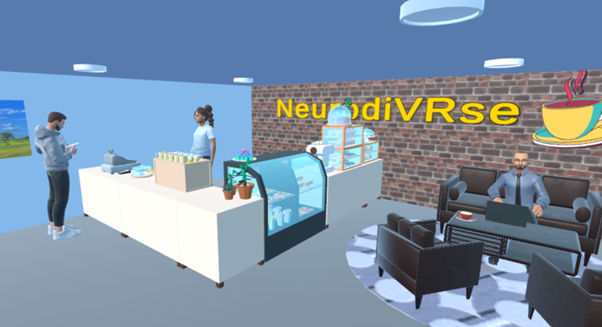
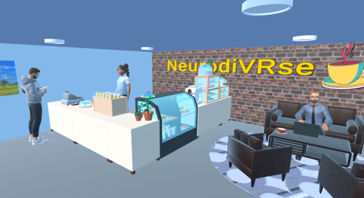

Concept and Objectives
NeurodiVRse is designed to create an engaging environment where neurodivergent individuals can practice social interactions. The game challenges players to engage in conversations with virtual characters, exploring both scripted dialogue and AI-driven conversations. By providing different approaches to dialogue, the game helps players develop essential social skills in a safe, controlled environment.